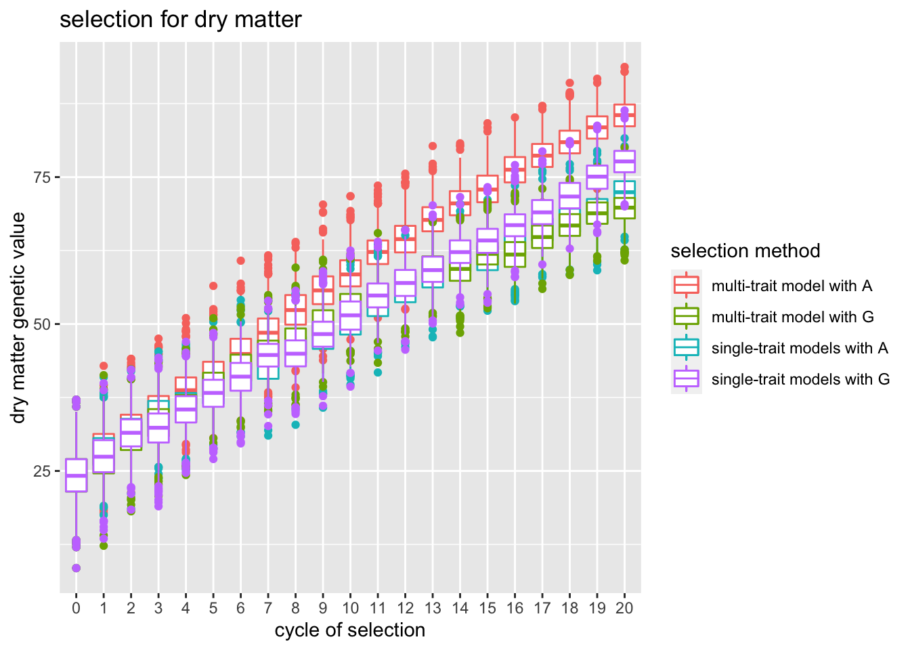
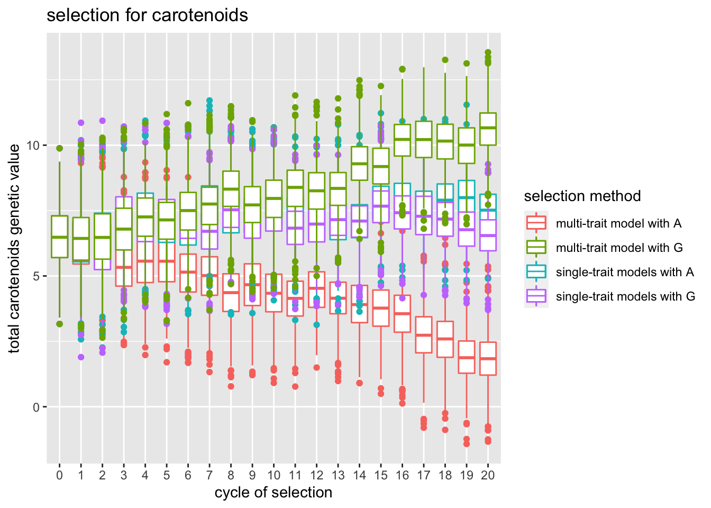
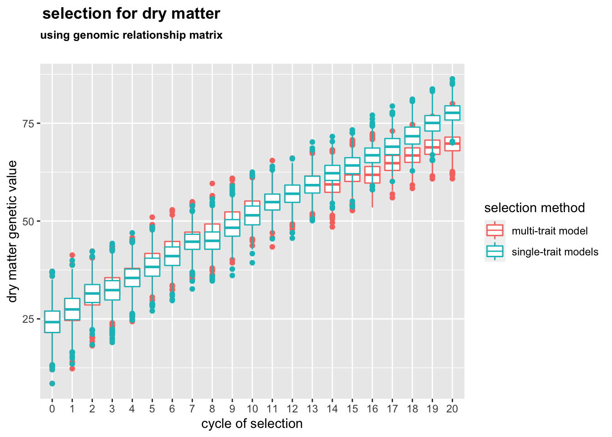
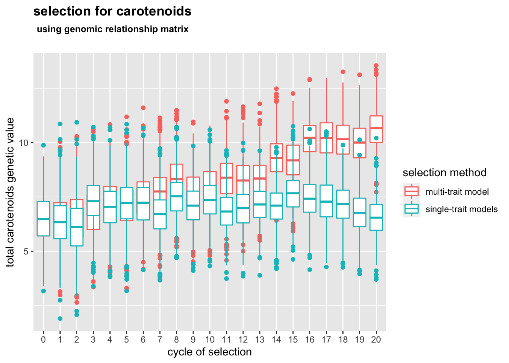
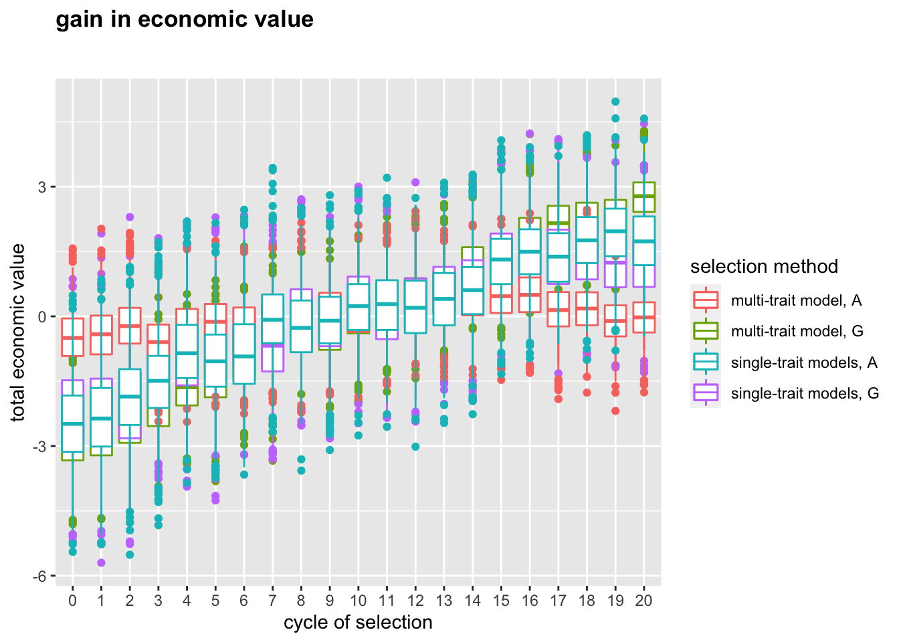

Last updated: 2022-07-22
Checks: 6 1
Knit directory: FinalProject/
This reproducible R Markdown analysis was created with workflowr (version 1.7.0). The Checks tab describes the reproducibility checks that were applied when the results were created. The Past versions tab lists the development history.
The R Markdown file has unstaged changes. To know which version of
the R Markdown file created these results, you’ll want to first commit
it to the Git repo. If you’re still working on the analysis, you can
ignore this warning. When you’re finished, you can run
wflow_publish to commit the R Markdown file and build the
HTML.
Great job! The global environment was empty. Objects defined in the global environment can affect the analysis in your R Markdown file in unknown ways. For reproduciblity it’s best to always run the code in an empty environment.
The command set.seed(20220516) was run prior to running
the code in the R Markdown file. Setting a seed ensures that any results
that rely on randomness, e.g. subsampling or permutations, are
reproducible.
Great job! Recording the operating system, R version, and package versions is critical for reproducibility.
Nice! There were no cached chunks for this analysis, so you can be confident that you successfully produced the results during this run.
Great job! Using relative paths to the files within your workflowr project makes it easier to run your code on other machines.
Great! You are using Git for version control. Tracking code development and connecting the code version to the results is critical for reproducibility.
The results in this page were generated with repository version 00e1b31. See the Past versions tab to see a history of the changes made to the R Markdown and HTML files.
Note that you need to be careful to ensure that all relevant files for
the analysis have been committed to Git prior to generating the results
(you can use wflow_publish or
wflow_git_commit). workflowr only checks the R Markdown
file, but you know if there are other scripts or data files that it
depends on. Below is the status of the Git repository when the results
were generated:
Ignored files:
Ignored: .DS_Store
Ignored: .Rhistory
Ignored: .Rproj.user/
Untracked files:
Untracked: .Rprofile
Untracked: .gitattributes
Untracked: .gitignore
Untracked: data/DMmodel_cycle1.RDS
Untracked: data/DMmodel_cycle2.RDS
Untracked: data/DMmodel_cycle3.RDS
Untracked: data/MTGselection_20cycle.RDS
Untracked: data/MTGselection_20cycle_copy.RDS
Untracked: data/MTmodel_cycle1.RDS
Untracked: data/MTmodel_cycle2.RDS
Untracked: data/MTmodel_cycle3.RDS
Untracked: data/MTmodel_cycletest.RDS
Untracked: data/MTselection_20cycle.RDS
Untracked: data/SP.RDS
Untracked: data/STGselection.RDS
Untracked: data/STGselection_20cycle.RDS
Untracked: data/STGselection_copy.RDS
Untracked: data/STselection_20cycle.RDS
Untracked: data/TCmodel_cycle1.RDS
Untracked: data/TCmodel_cycle2.RDS
Untracked: data/errCov.RDS
Untracked: data/lasttraceG.RDS
Untracked: data/lasttraceP.RDS
Untracked: data/testsave.RDS
Unstaged changes:
Modified: analysis/Simulations.Rmd
Modified: code/calcRelationshipMatrices.R
Modified: code/implement_selection.R
Note that any generated files, e.g. HTML, png, CSS, etc., are not included in this status report because it is ok for generated content to have uncommitted changes.
These are the previous versions of the repository in which changes were
made to the R Markdown (analysis/Simulations.Rmd) and HTML
(docs/Simulations.html) files. If you’ve configured a
remote Git repository (see ?wflow_git_remote), click on the
hyperlinks in the table below to view the files as they were in that
past version.
| File | Version | Author | Date | Message |
|---|---|---|---|---|
| Rmd | 00e1b31 | serenvillwock | 2022-07-19 | Update 7/19 |
| Rmd | 4faffb1 | serenvillwock | 2022-06-30 | fixed relationship matrix construction |
| Rmd | c0e8321 | serenvillwock | 2022-06-30 | code for generating CC matrix |
| Rmd | 4bcfcbe | serenvillwock | 2022-06-28 | initial commit |
| html | 4bcfcbe | serenvillwock | 2022-06-28 | initial commit |
The objective is to determine how modeling a bivariate phenotype with a multivariate or univariate models with either pedigree or SNP relationship matrices will affect genetic gain with index selection.
I use AlphaSimR to simulate breeding with index
selection over 20 cycles, with simulation parameters (trait
heritabilities, covariances, etc) based on a cassava population with
negatively correlated traits, dry matter and carotenoid content (color
chart), estimated or directly from Rabbi et al. 2017. These parameters
are: DM & TC additive correlation = -0.2 DM & TC error
correlation = -0.1 DM error variance = 41.08 TC error variance = 4.35
Number of founders = 200 Number of progeny = 6 HistoricalNe = 200
Segregating sites = 4400 (ICGMC 2015) nQTL = 80 nSNP = 1000
I modeled the traits in sommer using either one
bivariate model incorporating both traits or two separate univariate
models, with variety as a random effect and a covariance structure based
on either additive relationships or a SNP-based genomic relationships. I
then extracted estimates of the variance components and used these to
calculate a selection index, which was applied to identify the top 1/6th
of the population with the highest economic values. These lines were
randomly crossed to generate the next generation. The gain in true
genetic values for each trait and the overall economic values were
compared after 20 cycles of selection.
Install packages, start the README.md, set the random seed
herehere::i_am("analysis/Simulations.Rmd")source("code/implement_selection.R")
progeny <- generate_founders()
saveRDS(progeny, file = "data/founder_progeny_pop.RDS")# Load founder population
progeny <- readRDS("data/founder_progeny_pop.RDS")
SP <- readRDS("data/SP.RDS")
errCov <- readRDS("data/errCov.RDS")DMval = 1
TCval = 1source("code/implement_selection.R")
MTselection <- implement_pheno_selection(progeny, multitrait = T, nCycles = 20)
saveRDS(MTselection, file = "data/MTselection_20cycle_B.RDS")source("code/implement_selection.R")
STselection <- implement_pheno_selection(progeny, multitrait = F, nCycles = 20)
saveRDS(STselection, file = "data/STselection_20cycle_B.RDS")source("code/implement_selection.R")
MTGselection <- implement_g_selection(progeny, multitrait = F, nCycles = 20)
saveRDS(MTselection, file = "data/MTGselection_20cycle_B.RDS")source("code/implement_selection.R")
STGselection <- implement_g_selection(progeny, multitrait = F, nCycles = 20)
saveRDS(STGselection, file = "data/STGselection_20cycle_B.RDS")Reload data
MTselection <- readRDS(file = "./data/MTselection_20cycle.RDS")
STselection <- readRDS(file = "./data/STselection_20cycle.RDS")
MTGselection <- readRDS(file = "./data/MTGselection_20cycle.RDS")
STGselection <- readRDS(file = "./data/STGselection_20cycle.RDS")
# Set variable types
MTselection$DM_gv <- as.numeric(MTselection$DM_gv)
MTselection$TC_gv <- as.numeric(MTselection$TC_gv)
STselection$DM_gv <- as.numeric(STselection$DM_gv)
STselection$TC_gv <- as.numeric(STselection$TC_gv)
MTGselection$DM_gv <- as.numeric(MTGselection$DM_gv)
MTGselection$TC_gv <- as.numeric(MTGselection$TC_gv)
STGselection$DM_gv <- as.numeric(STGselection$DM_gv)
STGselection$TC_gv <- as.numeric(STGselection$TC_gv)
# Calculate overall economic value
MTselection$value <- scale(MTselection$DM_gv) + scale(MTselection$TC_gv)
STselection$value <- scale(STselection$DM_gv) + scale(STselection$TC_gv)
MTGselection$value <- scale(MTGselection$DM_gv) + scale(MTGselection$TC_gv)
STGselection$value <- scale(STGselection$DM_gv) + scale(STGselection$TC_gv)For dry matter, the multi-trait model with the additive relationship matrix performed the best, and the other models performed similarly. The gains for carotenoid content were all over the place because the scaling of the traits needs to be fixed so it is in the same units as dry matter (dry matter, with larger units, unintentionally received most of the weight in the selection index). While the multi-trait model with the genomic relationship matrix performed best in this context, and the multi-trait model with the additive relationship matrix performed the worst, I imagine that it may change when the scaling is fixed.
#plot progress for dry matter
ggplot(MTselection, aes(cycle, DM_gv)) + geom_boxplot(data = MTselection, aes(as.factor(cycle),
DM_gv, color = "multi-trait model with A")) + geom_boxplot(data = STselection,
aes(as.factor(cycle), DM_gv, color = "single-trait models with A")) + geom_boxplot(data = MTGselection,
aes(as.factor(cycle), DM_gv, color = "multi-trait model with G")) + geom_boxplot(data = STGselection,
aes(as.factor(cycle), DM_gv, color = "single-trait models with G")) + xlab("cycle of selection") +
ylab("dry matter genetic value") + scale_color_discrete("selection method") +
labs(title = "selection for dry matter")
#plot progress for total carotenoids
ggplot(MTselection, aes(cycle, TC_gv)) + geom_boxplot(data = MTselection, aes(as.factor(cycle),
TC_gv, color = "multi-trait model with A")) + geom_boxplot(data = STselection,
aes(as.factor(cycle), TC_gv, color = "single-trait models with A")) + geom_boxplot(data = STGselection,
aes(as.factor(cycle), TC_gv, color = "single-trait models with G")) + geom_boxplot(data = MTGselection,
aes(as.factor(cycle), TC_gv, color = "multi-trait model with G")) + xlab("cycle of selection") +
ylab("total carotenoids genetic value") + scale_color_discrete("selection method") +
labs(title = "selection for carotenoids")
#plot progress for dry matter with G matrix
ggplot(MTGselection, aes(cycle, DM_gv)) + geom_boxplot(data = MTGselection, aes(as.factor(cycle),
DM_gv, color = "multi-trait model")) + geom_boxplot(data = STGselection, aes(as.factor(cycle),
DM_gv, color = "single-trait models")) + xlab("cycle of selection") + ylab("dry matter genetic value") +
scale_color_discrete("selection method") + labs(title = expression(atop(bold("selection for dry matter"),
atop(bold("using genomic relationship matrix"), ""))))
#plot progress for total carotenoids
ggplot(MTGselection, aes(cycle, TC_gv)) + geom_boxplot(data = MTGselection, aes(as.factor(cycle),
TC_gv, color = "multi-trait model")) + geom_boxplot(data = STGselection, aes(as.factor(cycle),
TC_gv, color = "single-trait models")) + xlab("cycle of selection") + ylab("total carotenoids genetic value") +
scale_color_discrete("selection method") + labs(title = expression(atop(bold("selection for carotenoids"),
atop(bold("using genomic relationship matrix"), ""))))
#plot progress for overall economic value
ggplot(MTGselection, aes(cycle, value)) + geom_boxplot(data = MTGselection, aes(as.factor(cycle),
value, color = "multi-trait model, G")) + geom_boxplot(data = STGselection, aes(as.factor(cycle),
value, color = "single-trait models, G")) + geom_boxplot(data = MTselection,
aes(as.factor(cycle), value, color = "multi-trait model, A")) + geom_boxplot(data = STselection,
aes(as.factor(cycle), value, color = "single-trait models, A")) + xlab("cycle of selection") +
ylab("total economic value") + scale_color_discrete("selection method") + labs(title = expression(atop(bold("gain in economic value"),
"", "")))
With just one simulation run of the 20 cycles, I can’t be sure yet if these results are systematic or stochastic. I also need to fix the scaling of the trait values so that they are not just centered around 0 but also scaled to a standard deviation of 1. For this simulation, I used a negative error correlation between TC and DM, since the additive genetic correlation is less negative than the phenotypic correlation between the traits. Theoretically, I think that the multi-trait genomic relationship models may have an advantage because it can inform which varieties have variants that minimize the trade-off between traits (under a model of pleiotropy).
sessionInfo()
R version 4.1.2 (2021-11-01)
Platform: x86_64-apple-darwin17.0 (64-bit)
Running under: macOS Big Sur 10.16
Matrix products: default
BLAS: /Library/Frameworks/R.framework/Versions/4.1/Resources/lib/libRblas.0.dylib
LAPACK: /Library/Frameworks/R.framework/Versions/4.1/Resources/lib/libRlapack.dylib
locale:
[1] en_US.UTF-8/en_US.UTF-8/en_US.UTF-8/C/en_US.UTF-8/en_US.UTF-8
attached base packages:
[1] stats graphics grDevices utils datasets methods base
other attached packages:
[1] here_1.0.1 sommer_4.1.7 crayon_1.5.1 lattice_0.20-45
[5] MASS_7.3-54 Matrix_1.3-4 devtools_2.4.3 usethis_2.1.5
[9] forcats_0.5.1 stringr_1.4.0 dplyr_1.0.8 purrr_0.3.4
[13] readr_2.1.2 tidyr_1.2.0 tibble_3.1.6 ggplot2_3.3.5
[17] tidyverse_1.3.1 AlphaSimR_1.0.4 R6_2.5.1
loaded via a namespace (and not attached):
[1] fs_1.5.2 lubridate_1.8.0 httr_1.4.2 rprojroot_2.0.2
[5] tools_4.1.2 backports_1.4.1 utf8_1.2.2 DBI_1.1.2
[9] colorspace_2.0-2 withr_2.4.3 tidyselect_1.1.1 prettyunits_1.1.1
[13] processx_3.5.2 compiler_4.1.2 git2r_0.29.0 cli_3.2.0
[17] rvest_1.0.2 formatR_1.11 xml2_1.3.3 desc_1.4.0
[21] labeling_0.4.2 scales_1.1.1 callr_3.7.0 digest_0.6.29
[25] rmarkdown_2.11 pkgconfig_2.0.3 htmltools_0.5.2 sessioninfo_1.2.2
[29] highr_0.9 dbplyr_2.1.1 fastmap_1.1.0 rlang_1.0.1
[33] readxl_1.3.1 rstudioapi_0.13 farver_2.1.0 jquerylib_0.1.4
[37] generics_0.1.2 jsonlite_1.7.3 magrittr_2.0.2 Rcpp_1.0.8.3
[41] munsell_0.5.0 fansi_1.0.2 lifecycle_1.0.1 stringi_1.7.6
[45] whisker_0.4 yaml_2.2.2 brio_1.1.3 pkgbuild_1.3.1
[49] grid_4.1.2 promises_1.2.0.1 haven_2.4.3 hms_1.1.1
[53] knitr_1.37 ps_1.6.0 pillar_1.7.0 pkgload_1.2.4
[57] reprex_2.0.1 glue_1.6.1 evaluate_0.14 remotes_2.4.2
[61] modelr_0.1.8 vctrs_0.3.8 tzdb_0.2.0 httpuv_1.6.5
[65] testthat_3.1.2 cellranger_1.1.0 gtable_0.3.0 assertthat_0.2.1
[69] cachem_1.0.6 xfun_0.29 broom_0.7.12 later_1.3.0
[73] memoise_2.0.1 workflowr_1.7.0 ellipsis_0.3.2